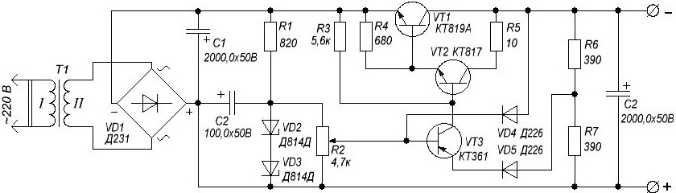

Регулируемый источник питания
(0-30 В)

Рис. 1 - Принципиальная схема блока питания:Мощность трансформатора должна быть не менее 150 Вт, напряжение вторичной обмотки – 21…22 В, выходной ток - 5 А. Тогда после диодного моста на емкости С1 можно получить напряжение около 30 В.
В качестве диодного моста лучше использовать диодные сборки типа RS602, которые при небольших габаритах рассчитаны на ток 6 А. Диодный мост мост можно также собрать из 10-ти амперных диодов ( Д231, Д242, Д243, Д245, Д246, Д247). При этом получится хороший запас по току.
Электролитические конденсаторы должны бытьрассчитаны на рабочее напряжение 50 В. Ёмкость конденсаторов С1 и С3 может быть в пределах от 2000 до 6800 мкФ.
Два стабилитрона Д814Д (VD1 и VD2) с напряжением стабилизации 13 В соединенны последовательно. Это даёт верхний предел регулировки напряжения 26 В минус падение напряжения на переходе транзистора VTТ1.
В качестве регулирующего транзистора в схеме применен КТ819, они выпускаются в пластиковых и металлических корпусах.